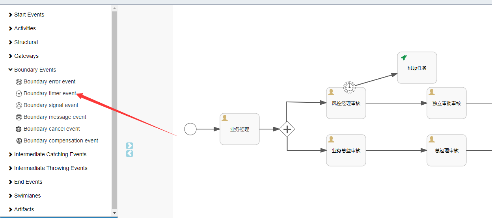
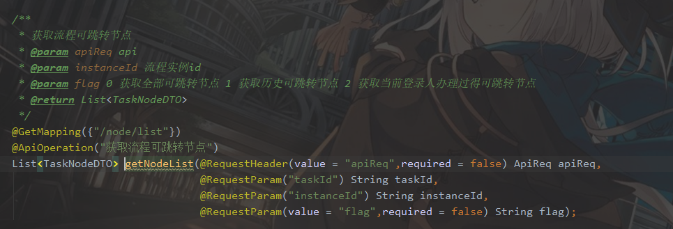

BPM使用手册
第一步 调用查询流程任务履历接口获取已完成节点信息
第二步 调用
重新启动流程并完成到某个节点接口：
1.1 请求方法：POST
1.2 地址：/api/newbpm/process/instance/start/and/complete/node
1.3 描述：重新启动流程并完成到某个节点
1.4 请求参数：
| 参数名称 | 中文名 | 类型 | 是否必传 | 说明 |
|---|---|---|---|---|
| apiReq | 请求信息 | ApiReq | 是 | 系统请求参数 |
| instanceId | 流程实例ID | String | 是 | 流程实例ID |
| id | 流程节点ID | String | 是 | body 需要到的某个节点ID |
| name | 流程节点名称 | String | 是 | body 需要到的某个节点名称 |
1.5 返回信息
| 参数名称 | 中文名 | 类型 | 是否必传 | 说明 |
|---|---|---|---|---|
| processDefinitionId | 流程定义ID | String | 是 | 流程定义ID |
| processDefinitionName | 流程定义名称 | String | 是 | 流程定义名称 |
| bizId | 业务ID | String | 是 | 业务ID |
| processInstanceId | 流程实例ID | String | 是 | 流程实例ID |
| startTime | 开始时间 | String | 是 | 开始时间 |
1.6 示例

流程实例图接口：
2.1 请求方法：GET
2.2 地址：/api/newbpm/process/definition/running/flowchart
2.3 描述：加载运行中的流程实例图
2.4 请求参数：
| 参数名称 | 中文名 | 类型 | 是否必传 | 说明 |
|---|---|---|---|---|
| apiReq | 请求信息 | ApiReq | 是 | 系统请求参数 |
| instanceId | 流程实例ID | String | 是 | 流程实例ID |

2.5 返回信息 流程图

查询流程任务履历接口：
3.1 请求方法：GET
3.2 地址：/api/newbpm/task/history
3.3 描述：查询流程以完成任务履历
3.4 请求参数：
| 参数名称 | 中文名 | 类型 | 是否必传 | 说明 |
|---|---|---|---|---|
| apiReq | 请求信息 | ApiReq | 是 | 系统请求参数 |
| instanceId | 流程实例ID | String | 是 | 流程实例ID |

3.5 返回信息
| 参数名称 | 中文名 | 类型 | 是否必传 | 说明 |
|---|---|---|---|---|
| id | 任务id | String | 是 | 任务id |
| processInstanceId | 流程实例id | String | 是 | 流程实例id |
| taskDefinitionKey | 任务节点定义ID | String | 是 | 任务节点定义ID |
| name | 任务名称 | String | 是 | 任务名称 |
| assignee | 任务领取人 | String | 是 | 任务领取人 |
| startTime | 开始时间 | Date | 是 | 开始时间 |
| claimTime | 签收时间 | Date | 是 | 签收时间 |
| endTime | 结束时间 | Date | 是 | 结束时间 |
| tenantId | 租户id | String | 是 | 租户id |
| durationInMillis | 耗时 | Long | 是 | 耗时 |
3.6 示例

flowable-modeler集成地址 服务Ip:端口/flowable/index.html#/processes
iframe集成 参数：tenantId 租户ID
如：http://localhost:48026/flowable/index.html#/processes?tenantId=2004291633263010001
modeler集成页面
点击需修改流程的流程
流程浏览界面
点击可视化编辑修改流程

点击发布按钮发布流程

如下图红框中所示即为边界定时事件

当任务到风控经理审核的时候，如果超过设置时间未完成任务则会触发边界定时时间，执行Http任务
相关属性：
| 名称 | 含义 | 配置示例 |
|---|---|---|
| Time cycle (e.g. R3/PT10H) | 循环执行 | R3/PT10H: 循环3次,每次执行间隔10小时 |
| Time duration (e.g. PT5M) | 只执行一次 | PT5H: 任务创建5小时后执行 |
| Cancel activity | 是否结束当前任务标示(如果勾选了那么在触发定时器时会结束当前任务,如下图中,如果勾选,那么在触发定时任务时"第一步"这个任务会结束) |


相关属性：
| 名称 | 含义 | 配置示例 |
|---|---|---|
| Request URL | 请求URL | 可配置ul表达式,如 ${http_url},在代码中设置详细值 |
| Request body | 请求体 | 固定配置: ${http_parameter_body} |
| Request method | 被请求方法类型 | PUT |
| Request headers | 请求头 | 可配置ul表达式,如 ${http_header},在代码中设置详细值 |
| Request body encoding | 请求编码格式 | UTF-8 |


java
@Test
public void completeTask1() {
apiReq.setTenantId(1L);
Map<String,Object> map = new HashMap<>();
StringBuilder requestHeaderBuilder = new StringBuilder();
requestHeaderBuilder.append("Content-Type: ");
requestHeaderBuilder.append("application/json;charset='utf-8'" + "\n");
requestHeaderBuilder.append("tenantId: ");
requestHeaderBuilder.append(apiReq.getTenantId() + "\n");
requestHeaderBuilder.append("token: ");
requestHeaderBuilder.append(apiReq.getToken()+ "\n");
requestHeaderBuilder.append("client: ");
requestHeaderBuilder.append("base-biz-svc-asset-assignee-management");
map.put("http_header",requestHeaderBuilder);
map.put("http_url","http://192.168.137.109:48026/api/newbpm/task/test");
taskApi.completeTask(apiReq,"2796e20b-1282-11eb-b826-005056c00001",map);
}

如上图所示，如果想要进行任意跳转，则我们需要知道任务所处位置能够往哪些位置上跳转。
例：当任务处在任务9时，那么只能往任务1进行跳转；任务处在4时，则可以往任务1、9、2进行跳转，当任务处在任务7时，则也只能往任务1、9、2进行跳转。

| 接口名称 | 接口调用方式 | 参数 | 能否为空 | 参数含义 |
| 获取可跳转节点 | GET | |||
| ApiReq | 否 | 系统必传请求参数 | ||
| taskId | 否 | 当前任务Id | ||
| instanceId | 否 | 流程实例Id | ||
| flag | 否 | 传入值为1时，获取历史可跳转节点。传入值为2时，获取当前登录人办理过得可跳转节点。 |
代码示例：
上图接口可获取到当前任务可跳转的任务节点。
| 接口名称 | 接口调用方式 | 参数 | 能否为空 | 参数含义 |
| 任意跳转 | PUT | |||
| ApiReq | 否 | 系统必传请求参数 | ||
| instanceId | 否 | 流程实例Id | ||
| taskid | 否 | 任务Id | ||
| targetId | 能 | 需要跳转到某节点的activity_id， 与changeType只能有一个值不为空 | ||
| changeType | 能 | 为1时代表回到开始节点，为2时代表跳到结束，为空时，根据targetId跳转到对应的任务节点 | ||
| variables | 能 | map类型。业务参数，跳转到某一节点需要参数时使用 |
代码示例

7、IBPM任务驳回到指定节点，指定节点完成后回到驳回前节点
7.1.如下图流程中，从D节点驳回到A节点，A节点完成后，流程回到D节点。
7.2.当按照流程图任务走到D节点时调用任意跳转接口，跳转到A节点。
接口定义如下：
注意：targetId和changeType有且只能有一个值。即当changeType不为空时，targetId必须为空。反之targetId不为空时，changeType必须为空
接口名称 接口调用方式 参数 能否为空 参数含义 任意跳转 PUT ApiReq 否 系统必传请求参数 instanceId 否 流程实例Id taskid 否 任务Id targetId 能 需要跳转到某节点的activity_id， 与changeType只能有一个值不为空 changeType 能 为1时代表回到开始节点，为2时代表跳到结束，为空时，根据targetId跳转到对应的任务节点 variables 能 map类型。业务参数，跳转到某一节点需要参数时使用 代码示例：
java @Test public void nodechangeArbitrarilyActivityList() { apiReq.setTenantId(1L); processInstanceApi. changeArbitrarilyActivity(apiReq, "97e36328-1299-11eb-b826-005056c00001", "60d271af-129a-11eb-b826-005056c00001", "sid-E6DA8F94-BE92-42FD-8D3C-C037B1BC7440", "", new HashMap<>()); }7.3.此时流程已经在A节点上。要跳回D节点需调用另一个接口（回原节点）
接口定义如下：
接口名称 接口调用方式 参数 能否为空 参数含义 回到原点 POST ApiReq 否 系统必传请求参数 taskid 否 当前流程所在节点的任务Id variables 能 map类型。业务参数，跳转到某一节点需要参数时使用 代码示例：
java @Test public void back() { apiReq.setTenantId(1L); processInstanceApi.back(apiReq, "a940c5a4-129a-11eb-b826-005056c00001",new HashMap<>()); }调用成功后即流程回到D节点。
流程示例: 流程文件

示例：当任务处在业务经理处，业务经理A领取后，任务转派给业务经理B或其他人时，需要调用如下接口

接口定义如下：
| 接口名称 | 接口调用方式 | 参数 | 能否为空 | 参数含义 |
| 回到原点 | POST | |||
| ApiReq | 否 | 系统必传请求参数 | ||
| taskid | 否 | 当前流程所在节点的任务Id | ||
| userName | 否 | 被委派人信息。 |
代码示例：

完成后由业务经理A即可继续推进流程。
流程示例：流程文件